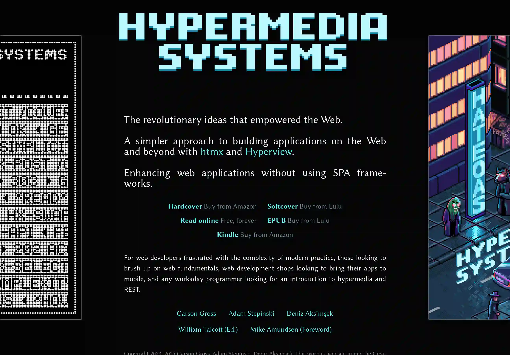

Hypermedia Systems

HATEOAS и Hypermedia получают, на мой взгляд, недостаточно внимания. Подходы, которые описывал в докторской Рой Филдинг, всё реже трактуются в связке с HATEOAS.
Это удивительно, потому как слово REST в обсуждениях я слышу часто. Но только в формате “используйте HTTP глаголы для описания действий”. Или, еще хуже, как синоним HTTP JSON API.
Как же так? Как обсуждать REST без учёта концепции зрелости Ричардсона? Это тема, которая требует дополнительного обсуждения, ведь HATEOAS — высший уровень зрелости REST.
К чему я? Прочитал за два дня книгу Hypermedia Systems. Авторы до этой книги работали над HTMX.
Хоть и сталкивался с HTMX, книга помогла дополнительно прояснить, как HTMX соотносится с HATEOAS. Авторы представляют уверенную аргументацию, что простой HTML можно рассматривать как ключевой элемент реализации HATEOAS. И что SPA с раздутыми JavaScript-фреймворками для маппинга JSON API в HTML — тупиковая ветвь эволюции.
Книгу можно и последовательно читать, и использовать как справочник по HTMX. Она есть в публичном доступе.
Если Вы ещё не встречались с HTMX, HATEOAS, Hypermedia, и не знаете, что это такое, рекомендую всеми руками, объём достаточно небольшой.